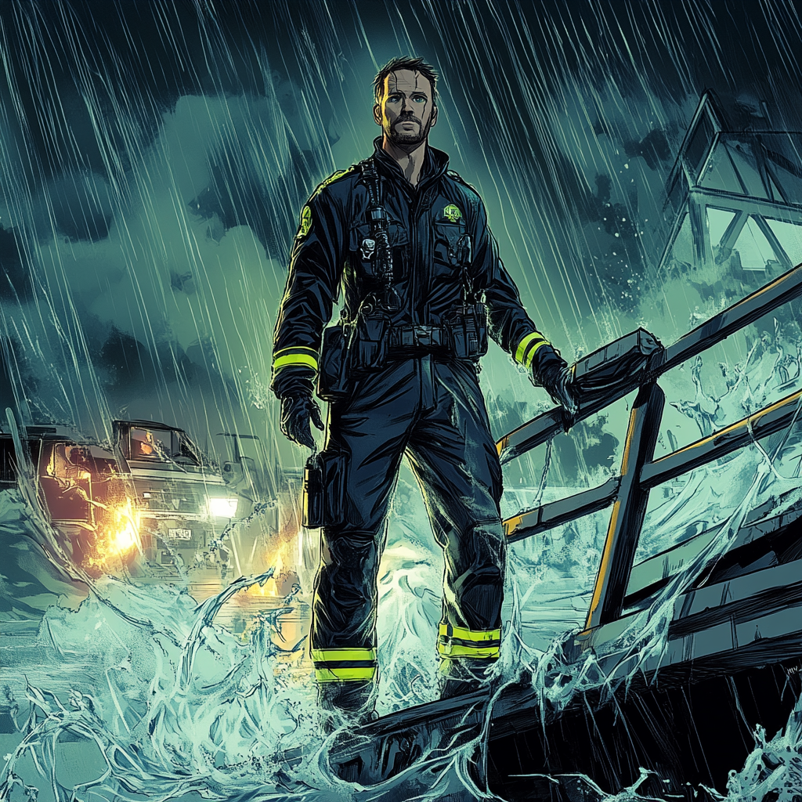

Floodline: The Tide of Duty

Chapter 1: The First Responder
Connor Flanagan followed his father and grandfather into the
Boston Fire Department, serving at Engine Company 28 in
Jamaica Plain. His unit specialized in hazardous materials
response, with Connor leading the first-entry team. His
methodical approach and calmness under pressure contrasted
with the department's more aggressive hotshots.
Chapter 2: The Chemical Crucible
The call came at 3 AM – a massive fire at a chemical
research facility near the harbor. Multiple companies
responded, including Engine 28 and Engine 41 from East
Boston. Initial reports indicated experimental compounds
were involved. Connor led his team through the south
entrance, coordinating with hazmat protocols while Engine
41's Lester McBurney took his team through the loading dock.
A catastrophic explosion rocked the facility as the teams converged. Caustic chemicals mixed with firefighting water, creating an impossible reaction. As consciousness faded, Connor noticed the water around him moving with unusual purpose, forming a protective cocoon. Through blurred vision, he saw similar water patterns surrounding McBurney across the room.
Chapter 3: Immersion
Connor woke in Massachusetts General's burn unit three days
later, in a room with McBurney. The doctors couldn't explain
how either man survived the chemical exposure. During
recovery, both discovered they could manipulate water,
though in markedly different ways. Connor developed precise
control, able to guide water with surgical accuracy.
McBurney manifested raw power, able to generate massive
pressure and force.
Connor's paramedic training helped him understand his emerging healing abilities. He learned to use water as an extension of his medical knowledge, accelerating natural healing processes through hydrokinetic manipulation. Meanwhile, McBurney focused on offensive applications, developing techniques for high-pressure water projection.
Chapter 4: Rising Tide
Their first joint rescue came during a bridge collapse.
Connor used precise water control to stabilize victims and
create protective barriers, while McBurney's powerful water
blasts cleared heavy debris. Their complementary abilities
caught Iron Man's attention, who recognized the value of
having two differently-skilled water controllers.
The Boston Fire Department supported both men's transition to the Boston Avengers Academy, seeing the benefit of enhanced emergency response capabilities that covered both precision and power. They maintained their firefighter status while training, responding to major incidents in both capacities.
Chapter 5: The Flow of Heroes
At BAA, Connor and McBurney developed their partnership
despite contrasting styles. Connor's calm precision balanced
McBurney's aggressive power, making them an effective team
during crisis response. They often train together, combining
their abilities in new ways to handle various emergency
scenarios.
Connor transformed his department's turnout gear into a specialized costume, incorporating hydration systems and medical supplies. The burn scars on his arm remind him of that transformative night at the chemical facility, driving him to master his water manipulation and healing abilities.
Present Day
His quarters at BAA resemble a paramedic's ready room, a
stark contrast to McBurney's sparse setup next door. He runs
first aid training for other heroes and maintains
certification as a hazmat specialist between missions. His
experience helps bridge the gap between conventional
emergency services and superhuman response teams.
Despite their enhanced abilities, both men remain firefighters at heart. They approach heroics differently—Connor with methodical discipline, McBurney with raw power—but share an unwavering commitment to saving lives. The department still calls both for significant fires, where their contrasting water manipulation styles prove invaluable for containment and rescue. Together as Floodline and 9-Alarm, they represent the evolution of emergency response, combining traditional firefighting with complementary superhuman capabilities to protect Boston from any threat.